Экономика адаптируется
Изменение климата заставляет бизнес и государства действовать: внедрять более экологичное производство, менять логистику и развивать рынки «зелёных» товаров. В результате появляются новые ниши для компаний и рождаются технологические прорывы.
- Сокращение пищевых отходов
- Популяризация растительного питания, сокращение потребления мяса
- Популяризация общественного транспорта, велосипедов и пешего передвижения
- Инвестирование в чистую энергетику и энергоэффективность
- Модернизация и обезуглероживание зданий
- Переход на электромобили
- Восстановление земель и остановка обезлесения
- Закрытие угольных заводов
- Обезуглероживание цемента, стали, пластика
- Обезуглероживание авиации и судоходства
Источник: Шестой оценочный доклад МГЭИК, Институт мировых ресурсов (WRI)
Альтернативная и возобновляемая энергетика
Изменение климата заставляет мир отказываться от привычных источников энергии — угля, нефти и газа. Чтобы снизить углеродный след и замедлить глобальное потепление, страны и компании активно развивают альтернативную энергетику. Возобновляемые источники энергии (ВИЭ) становятся главным направлением для всего энергетического сектора.
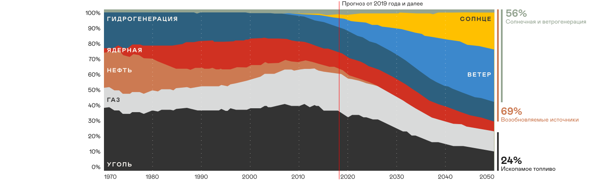
Источник: BloombergNEF, IEA
По прогнозам, к 2050 году мир ждёт энергетическая трансформация. Доля возобновляемых источников вырастет до 69% за счёт бурного роста солнечной и ветровой энергетики. Доля ископаемого топлива сократится почти в три раза.
Понятия «альтернативные» и «возобновляемые» источники часто используют как синонимы. Но между ними есть разница.
Альтернативные источники — это любая замена традиционным углю, нефти и газу. К ним относятся как возобновляемые источники, так и те, что не бесконечны — например, атомная энергия, водородное топливо, биогаз и синтетическое топливо.
Возобновляемые источники энергии (ВИЭ) — это только те, что восстанавливаются естественным путём и считаются экологически чистыми. Например: солнечная, ветровая, гидроэнергия, биоэнергия и геотермальная энергия.
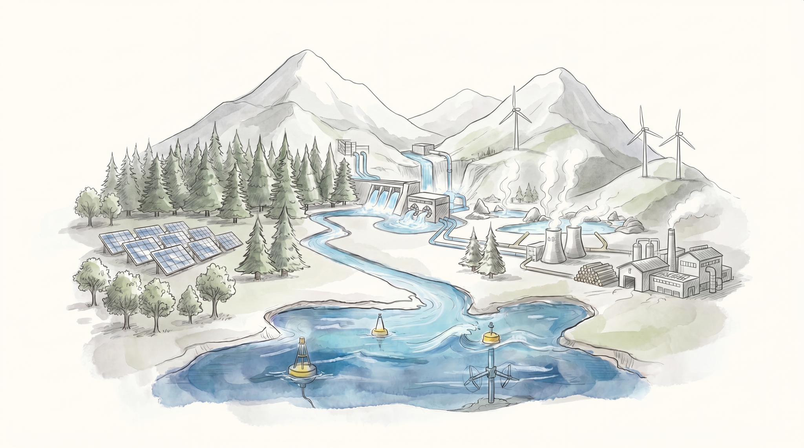
Низкоуглеродные технологии в транспорте
Чтобы снизить выбросы и сделать воздух чище, транспорт переходит на новые стандарты. Главные направления — это низкоуглеродные виды топлива, повышение эффективности двигателей и внедрение инноваций.
Наведите курсор на карточку
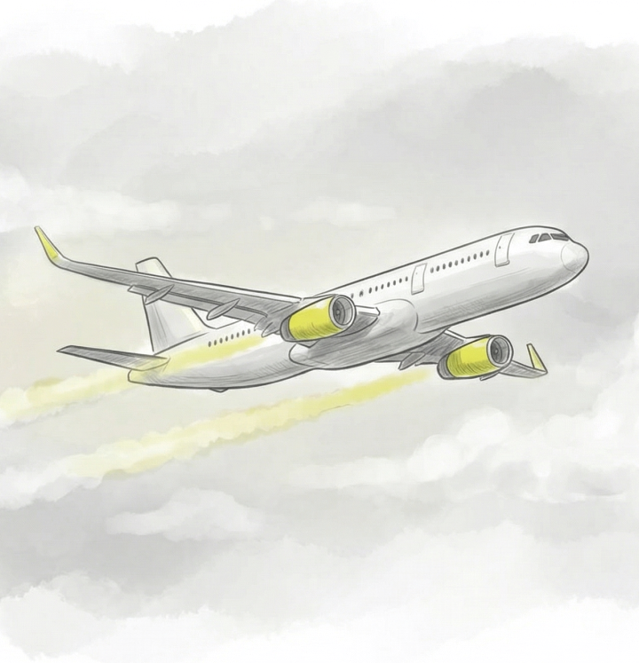
СамолётАвиация ищет способы стать экологичнее. Главные направления — переход на специальное экологичное топливо (SAF) и разработка гибридных и полностью электрических двигателей. Кроме того, форма самолётов становится более обтекаемой, чтобы тратить меньше горючего.
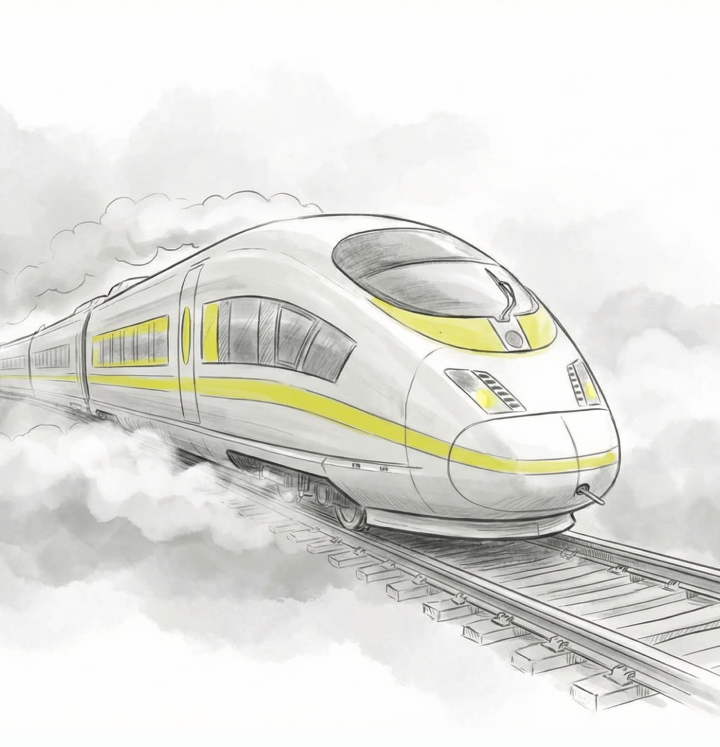
ПоездПоезда становятся ещё экологичнее. Локомотивы переходят на водород и аккумуляторы, а сами вагоны делают более энергоэффективными. Железные дороги всё чаще питают от возобновляемых источников, а цифровые системы помогают оптимизировать движение.
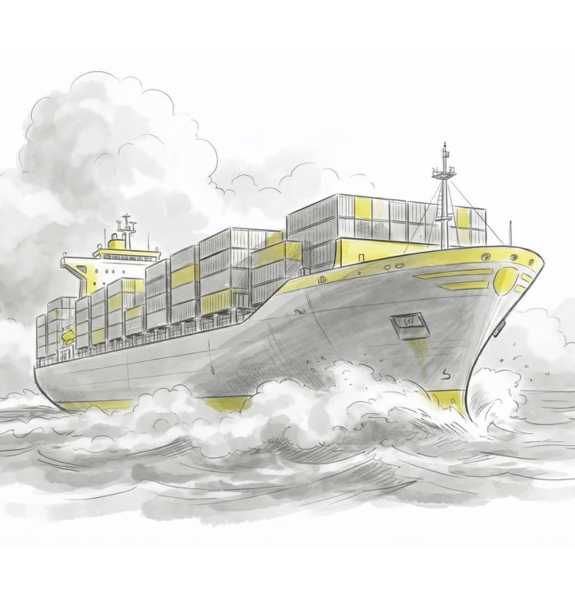
Грузовое судноМорские перевозки тоже становятся «зелёными». Грузовые суда переходят на электродвигатели с аккумуляторами и альтернативные виды топлива. Для питания бортовых систем на них всё чаще устанавливают солнечные панели.
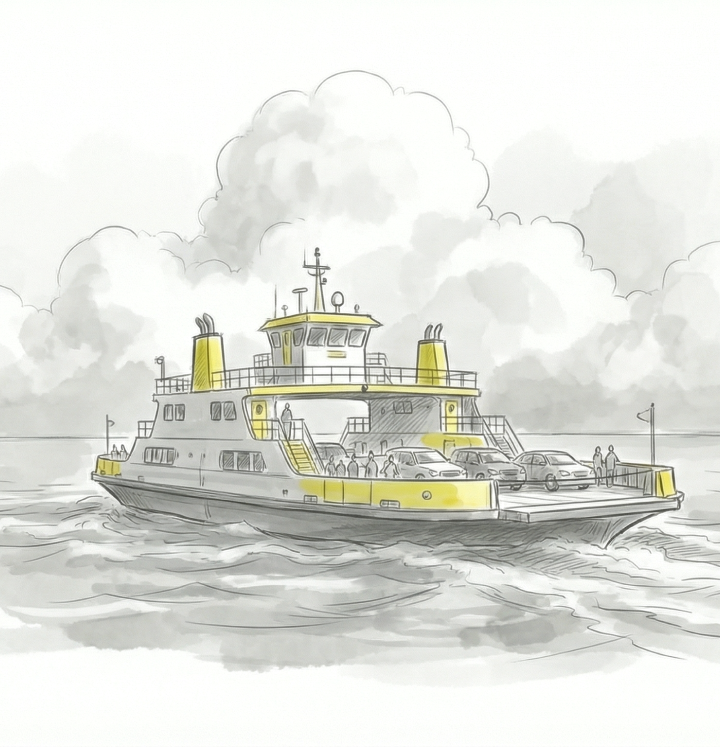
Паром на рекеРечной транспорт становится чище. Паромы всё чаще оснащают электрическими и гибридными двигателями, а в качестве топлива используют более экологичные альтернативы — сжиженный природный газ (СПГ) или биометан.
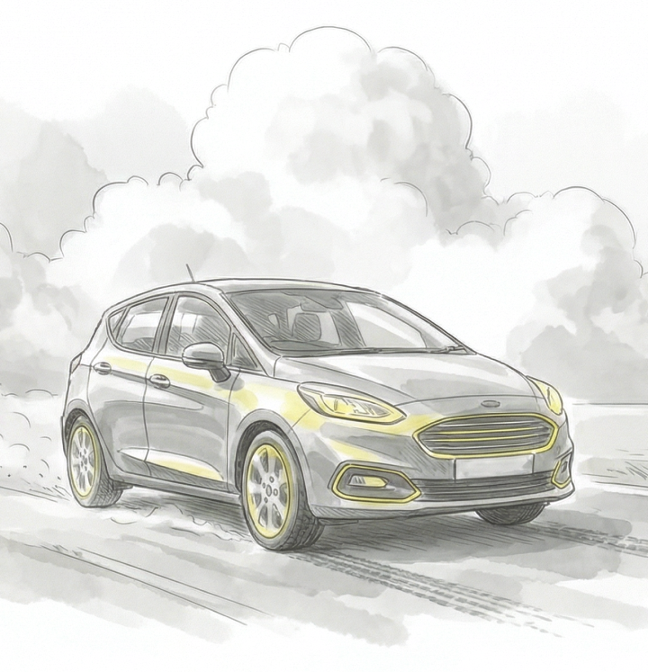
АвтомобильПомимо электромобилей, есть и другие способы сделать транспорт экологичнее. Это машины на водороде, газе или гибриды. Ещё одно важное направление — каршеринг, который помогает сократить общее число автомобилей в городе.
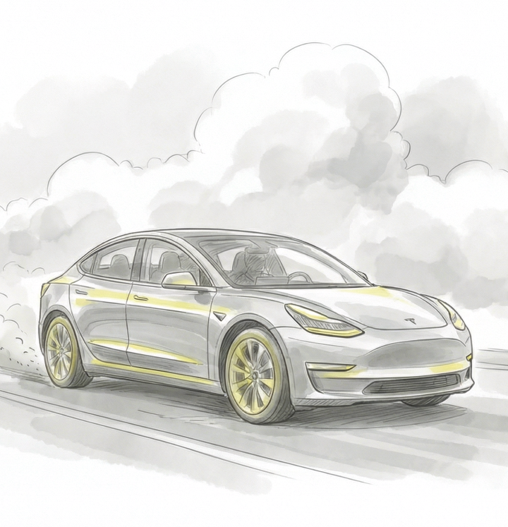
ЭлектромобильГлавное преимущество электромобиля — отсутствие прямых выбросов. Если заряжать его от возобновляемых источников, его углеродный след становится минимальным. Кроме того, в нём меньше технических жидкостей, что снижает количество отходов при эксплуатации.
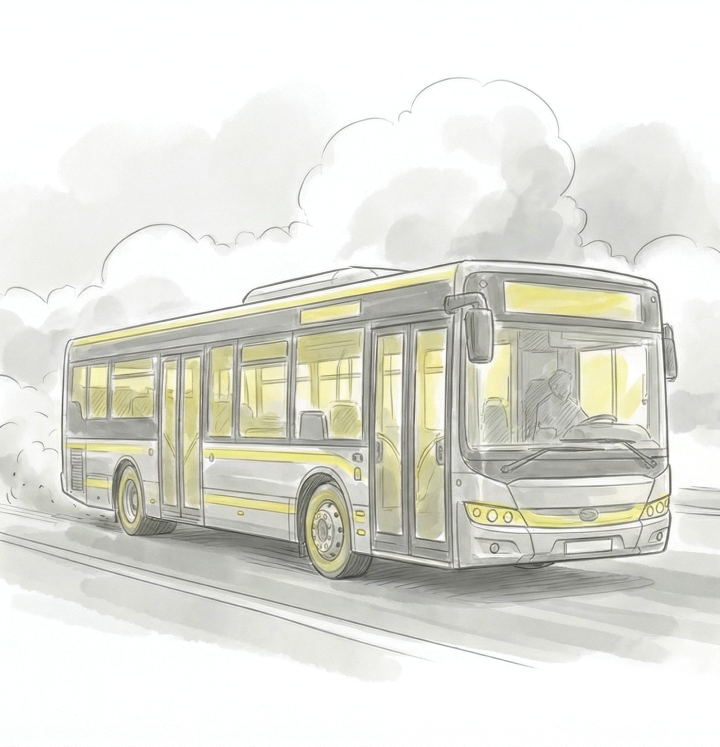
АвтобусОбщественный транспорт активно «зеленеет». На смену дизельным автобусам приходят электробусы, модели на газомоторном топливе и гибриды. Это помогает сделать воздух в городах значительно чище.
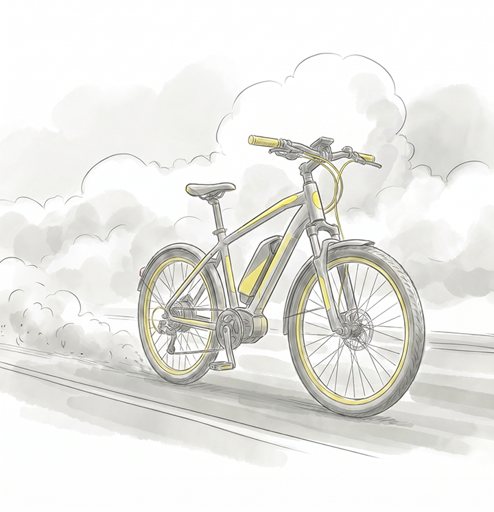
Велосипед и самокатСамый экологичный транспорт, который работает на вашей собственной энергии. У него нулевые выбросы, он помогает снизить пробки и нагрузку на городскую инфраструктуру, а ещё — это отличный способ поддерживать здоровье.
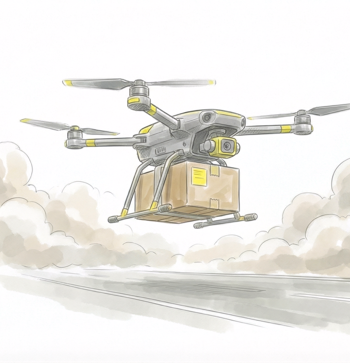
Дрон-доставщикБеспилотники, особенно в логистике, могут стать частью «зелёного» будущего. Они работают на электричестве, а умные алгоритмы прокладывают для них самые короткие и энергоэффективные маршруты. Это важная часть концепции «умного города».
Бизнес и климат: от рисков к возможностям
Осознавая неизбежность глобальных климатических изменений, современные компании разрабатывают корпоративные климатические политики, стратегии, дорожные карты и т.д. Бизнес ставит перед собой амбициозные цели: сократить экологический след, повысить устойчивость операционной деятельности, обеспечить рост доходов и укрепить конкурентоспособность на рынке.
Почему вопросы изменения климата важны для бизнеса?
Прямой и самый очевидный эффект климатических изменений — это проблемы, связанные с нарушением функционирования объектов инфраструктуры. Но здесь у компаний появляются не только риски, но и возможности.
Углеродный учёт и отчётность
Чтобы управлять своим влиянием на климат, компании нужно сначала его измерить. Для этого и нужен углеродный учёт — система подсчёта всех выбросов парниковых газов. Он помогает компании соблюдать законы, планировать снижение выбросов и запускать климатические проекты.
В России с 2025 года углеродную отчётность должны сдавать крупные предприятия, у которых выбросы превышают 50 000 тонн CO₂-эквивалента в год. Остальные компании могут делать это добровольно — например, чтобы улучшить репутацию и привлечь инвесторов.
Отчёты подают через специальный государственный сервис — Реестр выбросов парниковых газов. Он является частью системы ГИС «Энергоэффективность».
Как компенсировать углеродный след
Вопреки популярному мнению, просто посадить дерево — не всегда лучший способ компенсировать свой углеродный след. Деревьям нужны десятилетия, чтобы вырасти и начать поглощать значительное количество CO₂, и нет гарантии, что они не погибнут от засухи, пожара или не будут вырублены.
Поэтому более эффективным и устойчивым решением считается поддержка проверенных климатических проектов. Это могут быть проекты по развитию возобновляемой энергетики (ВИЭ), повышению энергоэффективности или переработке отходов.
Важно понимать, что компенсация — это лишь один из инструментов. Не менее важно — снижать свой собственный след.
Климатические проекты и углеродные единицы
С 2021 года в России действует закон (№ 296-ФЗ), который ввёл новые правила для бизнеса. Теперь компании могут запускать климатические проекты, чтобы снизить свой углеродный след. Климатический проект — это любая инициатива, которая помогает сократить выбросы парниковых газов или увеличить их поглощение.
Типы климатических проектов
Это могут быть проекты по развитию «зелёной» энергетики, повышению энергоэффективности, переработке отходов или восстановлению лесов
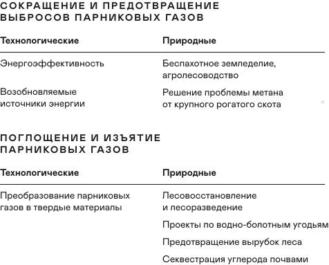
Климатические проекты в России регистрируются в Реестре углеродных единиц.
За успешную реализацию такого проекта компания получает углеродные единицы — это своего рода сертификаты, которые подтверждают, что компания сократила выбросы.
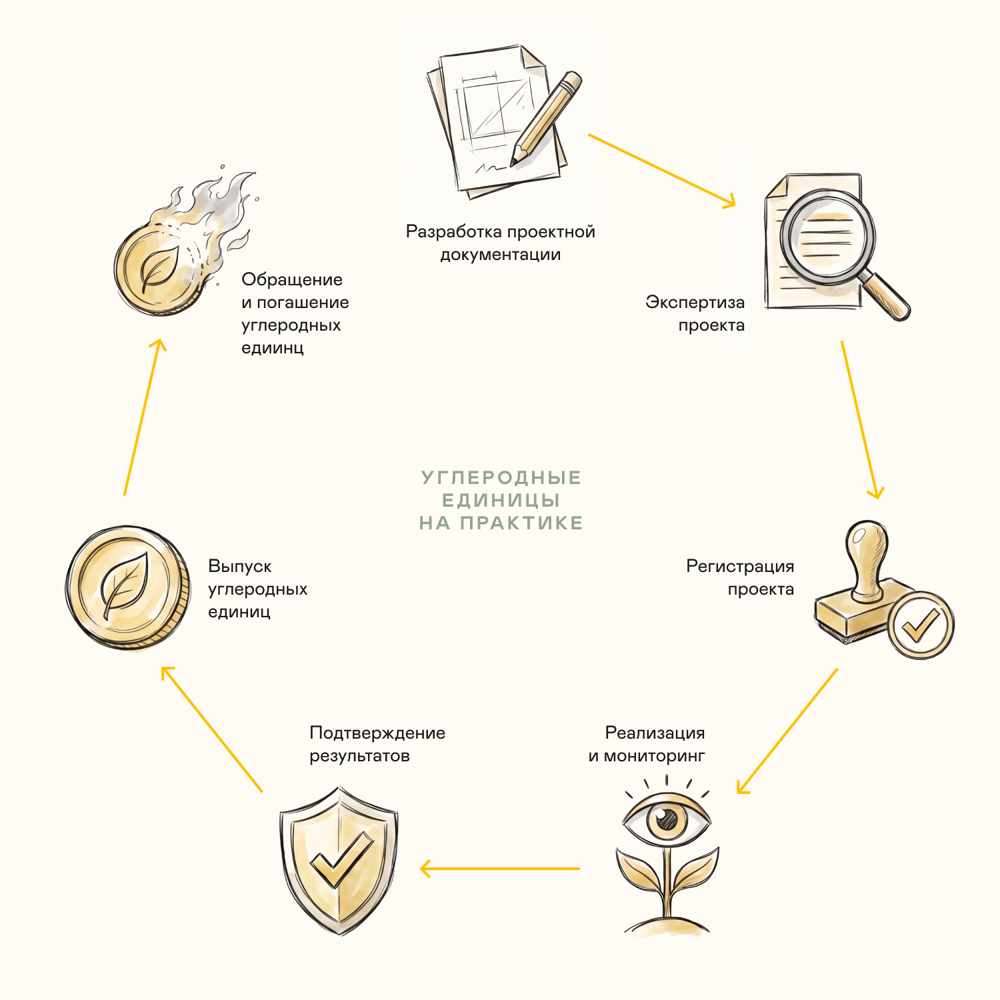
Компании, которые не могут полностью убрать свои выбросы, могут купить углеродные единицы у тех, кто реализует климатические проекты.
В будущем, если в России появится обязательный углеродный рынок, эти единицы, скорее всего, будут использоваться для покрытия выбросов сверх установленных государством лимитов. Также их можно будет использовать для оплаты углеродного налога, как это принято в мировой практике.
Инструменты климатического регулирования
В конце 2021 года Россия утвердила стратегию низкоуглеродного развития до 2050 года. У этой стратегии амбициозные цели: к 2050 году сократить выбросы парниковых газов на 60% от уровня 2019 года (и на 80% от уровня 1990-го), а к 2060 — достичь углеродной нейтральности.
Сокращения выбросов парниковых газов в России
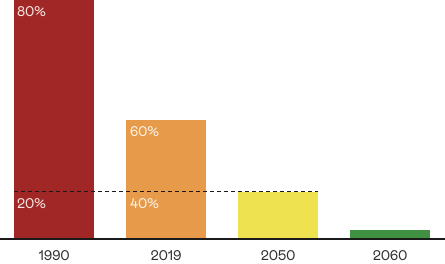
Важное условие — сделать это, не жертвуя экономическим ростом. Чтобы достичь этих целей, нужны были эффективные механизмы регулирования.
Экономические инструменты
Самыми гибкими считаются рыночные инструменты, которые создают так называемую «цену на углерод». Идея проста: заставить компании платить за выбросы парниковых газов. Это позволяет «монетизировать» ущерб для природы и включить его в стоимость продукции.
По сути, углеродный рынок — это способ финансировать проекты, которые помогают климату, но не были бы выгодными сами по себе. Товаром на этом рынке выступают углеродные единицы — результат усилий по снижению выбросов. Так как этот товар нематериальный, главная сложность — создать понятные и честные правила для всех участников, а также удобную инфраструктуру для торговли.
Мировой опыт
Глобальный углеродный рынок начал формироваться в 2005 году, когда вступил в силу Киотский протокол. Этот документ предложил странам, взявшим на себя обязательства по сокращению выбросов, три основных механизма.
С 2006 года эти механизмы помогли создать около 3 миллиардов углеродных единиц, большая часть из которых пришлась на проекты в развивающихся странах.
Системы торговли квотами
Система торговли квотами — это обязательный рынок, который работает по принципу «ограничивай и торгуй» внутри страны или региона.
- Ограничение. Правительство устанавливает общий лимит (потолок) выбросов для одного или нескольких секторов экономики.
- Торговля. Компании должны иметь разрешение на каждую тонну своих выбросов. Эти разрешения можно получить от государства или купить у других компаний, которые сократили свои выбросы и имеют излишек квот.
В Азии, которая является ключевым рынком для российской продукции, такие системы пока находятся на стадии формирования, но быстро развиваются. Поскольку углеродное регулирование входит в национальные стратегии большинства стран региона, можно ожидать, что эти рынки будут расти.
Как внедряются системы торговли квотами
Обычно страны действуют постепенно. Прежде чем запускать национальную систему, они часто тестируют её на пилотных проектах, ограниченных по времени или региону. Именно таким прототипом углеродного рынка в России является Сахалинский эксперимент.
Цена на выбросы (CO₂-эквивалент)
Это сумма, которую предприятие обязано заплатить государству или рынку за каждую тонну газов, выпущенных в атмосферу. Стоимость углеродных единиц на рынке обычно стремится к уровню цен на выбросы СО₂.
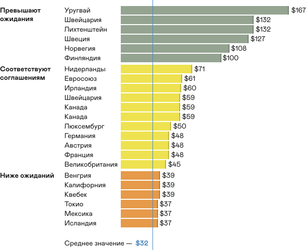
Источник — visualcapitalist.com
Экономические меры и технологические решения — это важные инструменты.
Но чтобы они работали в глобальном масштабе, нужны общие правила и политическая воля. В следующем разделе речь пойдёт о том, как мировое сообщество пытается договориться и какие соглашения лежат в основе климатической политики.